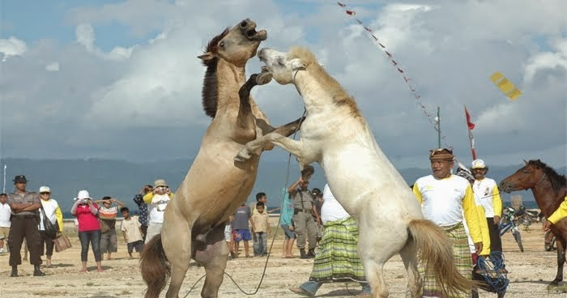

Tarung Kuda (Pogiraha Adhara)
dalah salah satu pertunjukan budaya di daerah Kabupaten Muna maupun Kabupaten Muna Barat dimana seorang pawang kuda membawa dua ekor kuda jantan agar saling beradu kekuatan / berkelahi memperebutkan seekor kuda betina. Pertunjukan ini telah ada sejak ratusan tahun yang lalu dan di buktikan dengan adanya lukisan-lukisan purbakala pada dinding gua Situs Peninggalan Purbakala Liang Kobori dan Metanduno. Pertunjukan budaya ini merupkan salah satu simbol Kabupaten Muna dan digambarkan pada Lambang daerah saat ini, sebagai simbol kekuatan masyarakat Muna.